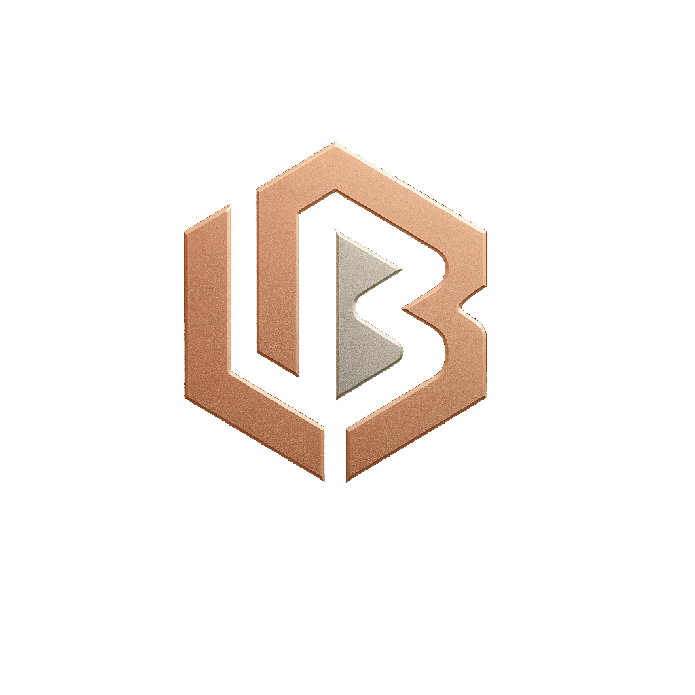

The animation highlights the metallic shine, floral accents, and smooth rotations—giving you a magical first look at Lumi Buds before you explore them in AR or X-Ray mode. It’s a soft, aesthetic preview of the world behind the sparkle.

Where sound meets sparkle.
Housed in a luminous pastel box that opens like a treasure chest, Lumi Buds feature a radiant gem-cut exterior, floral accent detail, and a soft reflective finish that catches the light with every movement. Sleek metallic charging nodes ensure a fast, secure charge, while the comfort-fit silicone tips make every listening moment feel airy and effortless.
Choose from three enchanting colors—Silver Glow, Golden Hour, and Blush Prism—each crafted to match your personal sparkle. Whether you're vibing to your playlist, unwinding before bed, or taking a dreamy walk, Lumi Buds bring the perfect mix of elegance and immersive sound.
Glow like a gem.
Sound like a dream.
With Prism Dreamz, every moment feels a little more magical.
Experience Lumi Buds in a whole new dimension with the Prism Dreamz AR Model. Rotate it, zoom in, and explore every gem-cut facet up close as the earbuds glimmer in real time. Watch the metallic sheen shift with your lighting, see the floral detailing sparkle, and get a true feel for the dreamy pastel finish before it even reaches your hands.
The AR Model lets you:
View the earbuds in full 360°
See the gem-cut details and metallic textures react to real light
Designed to reflect the magical world of the Prism Dreamz collection, the AR experience makes Lumi Buds feel like a real piece of jewelry—floating right in front of you.
Bring the sparkle to life.
See Lumi Buds exactly as they shimmer in reality.
See the magic behind the sparkle.
Discover what makes Lumi Buds shine from the inside out. The Prism X-Ray View reveals the hidden components beneath the gem-cut exterior—showing the inner structure, metallic nodes, and precision-crafted chipset that power every dreamy sound.
With this see-through mode, you can explore the technology that creates the soft glow, the crystal clarity, and the iconic Prism Dreamz sparkle. It’s a transparent look into the beauty and engineering behind your earbuds.
Watch Lumi Buds come alive through a dreamy pastel animation that captures the essence of the Prism Dreamz collection. This short video showcases the gem-cut finish, soft sparkles, and signature Y2K glow, bringing out the personality and elegance of the earbuds in motion.
The animation highlights the metallic shine, floral accents, and smooth rotations—giving you a magical first look at Lumi Buds before you explore them in AR or X-Ray mode. It’s a soft, aesthetic preview of the world behind the sparkle.